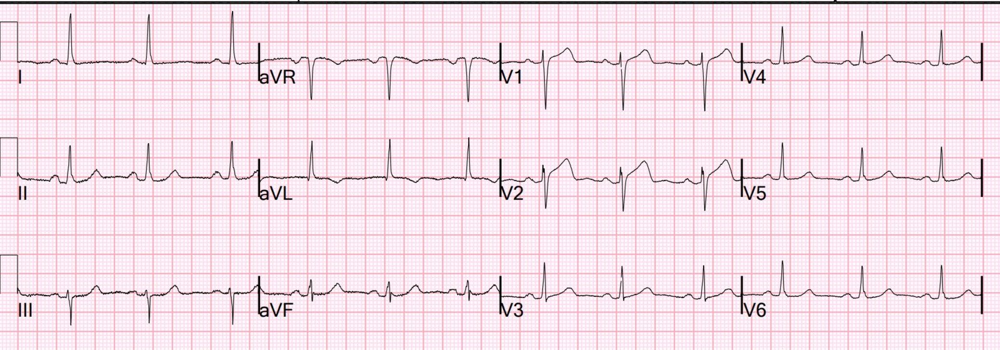
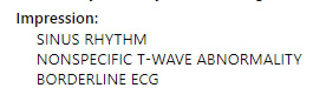
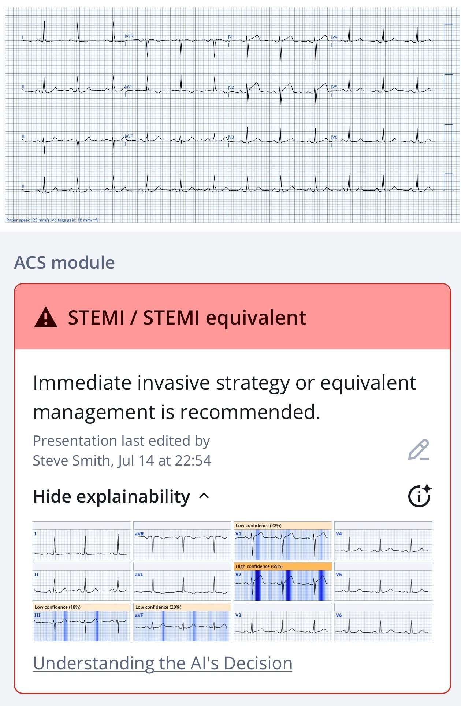
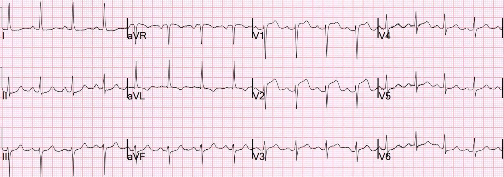
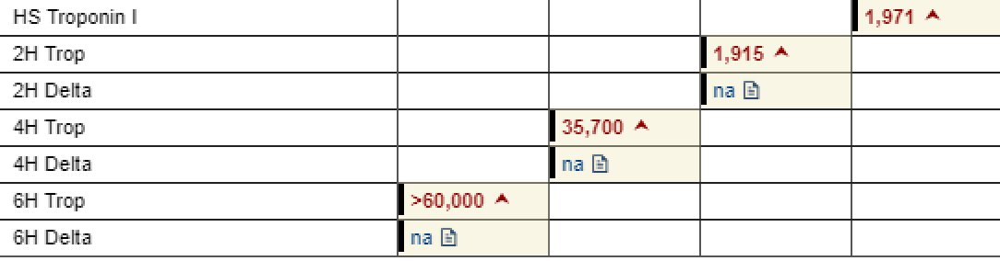
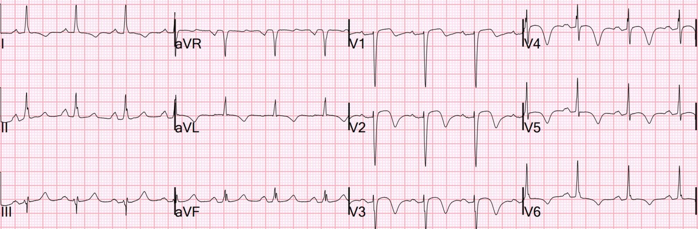
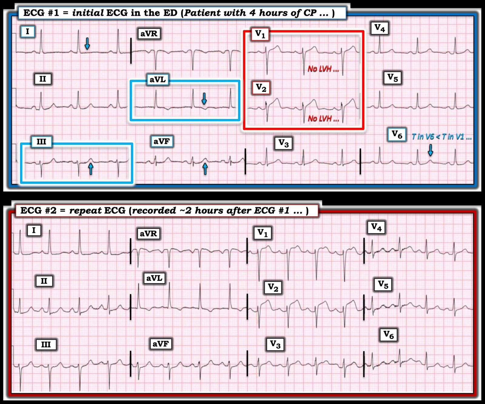

19/07/2025 — Ngay cả OMI thỏa tiêu chuẩn STEMI cũng bị bỏ sót, và bị gọi là “Không phải STEMI”
Bản dịch tiếng Việt của bài "Even OMI that are STEMI are missed, and called “Not a STEMI”" – Dr. Smith’s ECG Blog. Giữ nguyên toàn bộ 7 hình ảnh của bản gốc.
Một phụ nữ khoảng 40 tuổi, không có tiền sử bệnh lý gì, đến khám vào lúc tờ mờ sáng vì đau ngực 4 giờ. Cơn đau đã xuất hiện từng lúc trong một tuần, nhưng chị cho rằng đó là do ăn phải thứ gì đó. Một điện tâm đồ được ghi lúc phân loại (triage):


Kết quả đọc bằng máy tính thông thường


Bạn nghĩ gì?
Điện tâm đồ này có giá trị chẩn đoán tắc LAD (OMI), và cũng chẩn đoán STEMI! Có ST chênh lên (STE) 1 mm ở chuyển đạo V1. Có STE 1,5 mm ở chuyển đạo V2. (Tiêu chuẩn STEMI ở nữ là STE ở 2 chuyển đạo liên tiếp, 1 mm ở mọi chuyển đạo, trừ V2 và V3 là 1,5 mm) Vì vậy, điện tâm đồ này thỏa tiêu chuẩn STEMI!! Đúng là nhiều điện tâm đồ bình thường có STE, nên chỉ vì thỏa tiêu chuẩn STEMI không tự động có nghĩa đó là OMI.
Tuy nhiên, có một sóng T lớn bất thường ở V1. Có một sóng T tối cấp chắc chắn ở V2. Sóng T tối cấp KHÔNG được đánh giá bằng biên độ, mà bằng 1) độ “đầy đặn” (diện tích dưới đường cong so với biên độ QRS) và 2) tính đối xứng tăng lên. Sóng T ở V2 RẤT đầy đặn. KHÔNG THỂ LÀ GÌ KHÁC ĐƯỢC! Có một chút ST chênh xuống soi gương ở II và aVF. Điện tâm đồ có ST chênh lên bình thường KHÔNG có ST chênh xuống ở bất cứ đâu khác ngoài aVR!!
Theo định nghĩa, điện tâm đồ này có giá trị chẩn đoán tắc LAD VÀ STEMI!!
Queen of Hearts nhận ra ngay lập tức.


Ứng dụng PMcardio for Individuals 3.0 mới nay đã có mô hình Queen of Hearts mới nhất và khả năng giải thích của AI (bản đồ nhiệt màu xanh lam)! Tải ngay cho iOS hoặc Android. https://www.powerfulmedical.com/pmcardio-individuals/ (Bác sĩ Smith và Meyers đã huấn luyện mô hình AI và là cổ đông của Powerful Medical.)
Giá trị đầu ra thô của mô hình AI là 0,84. Mọi giá trị trên 0,50 có độ đặc hiệu 98%, và trên 0,83 là độ tin cậy cao (còn đặc hiệu hơn nữa). 1,00 là đặc hiệu 100%. Vậy là cô ấy RẤT chắc chắn.
Điện tâm đồ được đưa cho bác sĩ cấp cứu xem nhưng người này không nhận ra OMI.
Khoảng 2 giờ sau, kết quả troponin I đầu tiên trả về là 1971 ng/L, và một bác sĩ khác đặc biệt giỏi đọc OMI đã nhận ra OMI LAD.
Bệnh nhân bắt đầu khó thở. Siêu âm tại giường cho thấy nhiều đường B của phù phổi cấp. Bệnh nhân được thở BiPAP. Phòng thông tim được kích hoạt.
Chỉ riêng xác suất tiền nghiệm của OMI ở một bệnh nhân có đau ngực ngắt quãng (stuttering) trong một tuần, sau đó đau ngực liên tục rồi phù phổi đã là quá chắc chắn.
Bác sĩ tim mạch đồng ý rằng bệnh nhân nên vào phòng thông tim dựa trên bệnh sử và biểu hiện lâm sàng, nhưng lưu ý rằng “điện tâm đồ không phải là một STEMI chắc chắn”
Chúng tôi thường xuyên nghe câu “Đây không phải STEMI” khi một OMI thật sự không thỏa tiêu chuẩn STEMI, nhưng bạn sẽ nghĩ rằng một STEMI-OMI thật sự thì hẳn phải chắc chắn rồi chứ.
Bác sĩ ghi một điện tâm đồ khác 2 giờ sau điện tâm đồ đầu tiên:


Giờ thì còn rõ ràng hơn nữa.
Bệnh nhân phải đặt nội khí quản vì phù phổi trước khi chụp mạch vành.
Chụp mạch vành:
“Tóm tắt, nữ 49 tuổi, không có tiền sử bệnh mạch vành, nay đến khám vì đau ngực từng lúc và các dấu hiệu trên EKG gợi ý hội chứng vành cấp.”
Ngay cả lúc này, bác sĩ can thiệp vẫn không gọi các dấu hiệu điện tâm đồ là có giá trị chẩn đoán tắc mạch vành cấp (OMI); thay vào đó, chỉ là “gợi ý ACS”.
Kết quả: LAD: hẹp lệch tâm nhẹ ở lỗ xuất phát. Sau đó là tắc LAD đoạn giữa do huyết khối (100%, TIMI 0)
Siêu âm tim:
Chức năng tâm thu thất trái giảm nhẹ với EF ước tính 41%.
Rối loạn vận động thành khu trú – vô động vùng trước từ giữa đến mỏm, vùng trước vách đoạn giữa, vách vùng mỏm, thành dưới vùng mỏm và thành bên vùng mỏm.
Diễn biến troponin:


Như vậy bệnh nhân bị một nhồi máu cơ tim rất rộng do tắc mạch vành cấp và thời gian từ cửa đến bóng (door-to-balloon) bị chậm trễ ít nhất 2 giờ.
Điện tâm đồ sau PCI


Có giá trị chẩn đoán tái tưới máu.
Siêu âm tim vài ngày sau cho thấy chức năng hồi phục đáng kể (một phần cơ tim bị choáng nhưng không bị nhồi máu). EF hồi phục lên 55%, nhưng có lẽ trước nhồi máu là 70%.
Những điểm cần học:
- Ngay cả STEMI thỏa tiêu chuẩn STEMI cũng có thể khó nhận ra trên điện tâm đồ.
- Hãy dùng Queen of Hearts. Cô ấy sẽ đưa CẢ OMI STEMI lẫn OMI không STEMI vào phòng thông tim nhanh hơn, với ít dương tính giả hơn.
- Chúng tôi có một bài báo đang được bình duyệt cho thấy điều quyết định chẩn đoán cuối cùng là “STEMI” hay “NSTEMI” không phải là có ST chênh lên đủ chẩn đoán hay không, cũng không phải là có tắc mạch vành cấp hay không, mà là thời gian từ cửa đến bóng của bệnh nhân ngắn hơn hay dài hơn 120 phút.
======================================
BÌNH LUẬN CỦA TÔI, bởi KEN GRAUER, MD (19/7/2025):
Tôi thấy ca hôm nay mang tính giáo dục qua những sơ suất đã xảy ra. Một số sơ suất khá tinh tế, số khác thì không tinh tế bằng. Nhưng tôi nghĩ sẽ có ích khi điểm lại những sơ suất tinh tế — và không-mấy-tinh-tế mà tôi ghi nhận khi đọc ca này, với mục tiêu mang tính xây dựng là học hỏi từ chúng.
- BẠN đã nhận ra bao nhiêu sơ suất trong số này?
Những điểm cần học chung:
Hãy xem xét những điều sau:
- Bệnh sử cho chúng ta một manh mối về những gì có thể chờ đợi. Bệnh nhân hôm nay kể bệnh sử đau ngực từng lúc (Chest Pain, CP) xảy ra trong khoảng ~1 tuần — trước đêm bệnh nhân bị đánh thức bởi cơn đau ngực dữ dội kéo dài 4 giờ, và chính cơn đau này khiến bệnh nhân đến khoa cấp cứu (ED).
- Chắc chắn cơn đau ngực dữ dội đánh thức bệnh nhân và kéo dài 4 giờ, khiến bệnh nhân đến khoa cấp cứu — có thể là một biến cố cấp. Nhưng với bệnh sử nói trên, cũng có thể — một biến cố tim mạch đã xảy ra vào bất kỳ lúc nào trong tuần trước đó khi bệnh nhân có những cơn đau ngực từng lúc (không được mô tả chi tiết hơn trong các ghi chép mà chúng ta có).
- Liên quan của điều trên đến ca hôm nay? — Nếu bệnh nhân hôm nay đang có (hoặc đã có) một biến cố — và/hoặc đang có tình trạng mở-và-đóng tự phát từng lúc của một động mạch “thủ phạm” — Chúng ta nên chuẩn bị tinh thần để thấy bất cứ điều gì trên điện tâm đồ ban đầu của bệnh nhân, kể cả khả năng có sóng T tái tưới máu và/hoặc một mức độ giả bình thường hóa nào đó (nếu có tình trạng mở-và-đóng tự phát từng lúc, đang tiếp diễn, của một mạch “thủ phạm”).
- Troponin ban đầu trong ca hôm nay trả về tăng đáng kể ( = 1971 ng/L) — điều này, cùng với bệnh sử trên, có nghĩa là bệnh nhân đã bị nhồi máu. Với góc nhìn “qua gương chiếu hậu” mà troponin mang lại (về những gì đã xảy ra từ vài giờ trước hoặc lâu hơn) — điện tâm đồ ban đầu cần được diễn giải dưới góc nhìn này (tức là, điện tâm đồ ban đầu có thể biểu hiện hình ảnh cấp tính — hoặc hình ảnh bán cấp nhiều hơn — hoặc một hình ảnh kém ấn tượng hơn nhiều nếu biến cố của bệnh nhân này đã xảy ra hơn vài ngày và các dấu hiệu điện tâm đồ phần lớn đã hết).
- Điện tâm đồ ghi lại mãi 2 giờ sau mới được thực hiện — và khi đó, có vẻ chỉ vì troponin ban đầu trả về tăng. Bất kể có thấy điều gì trên điện tâm đồ ban đầu hay không — với bệnh sử bệnh nhân này đến khoa cấp cứu vì đau ngực dữ dội 4 giờ bắt đầu vào lúc tờ mờ sáng — cần ghi điện tâm đồ thứ 2 trong vòng không quá 15-30 phút sau điện tâm đồ ban đầu.
- Vào khoảng thời điểm có kết quả troponin ban đầu, chúng ta được biết rằng “bệnh nhân bắt đầu khó thở” — và được phát hiện bị phù phổi cấp. Dù không thể biết được nếu không có hồ sơ bệnh án đầy đủ hơn — Chúng ta nên tự hỏi liệu đã có dấu hiệu khó thở tăng dần trong 2 giờ đó kể từ khi nhập viện hay không, khoảng thời gian mà không có điện tâm đồ ghi lại nào được thực hiện. Có bài học nào cần rút ra ở đây về việc chăm sóc bệnh nhân này có thể giúp ích cho việc chăm sóc các bệnh nhân sau này?
- Cuối cùng, theo Bác sĩ Smith — ngay cả sau khi thấy điện tâm đồ thứ 2, thấy troponin tăng đáng kể, và thấy phù phổi cấp xuất hiện — kết luận của khoa tim mạch vẫn là “các dấu hiệu trên EKG ‘gợi ý’ hội chứng vành cấp”. Thật khó hình dung cần những gì để gọi các diễn biến trong ca này không chỉ là “gợi ý” — mà là chẩn đoán nhồi máu cơ tim cấp …
2 điện tâm đồ đầu tiên trong CA hôm nay:
Chúng ta được biết rằng điện tâm đồ ban đầu trong ca hôm nay “không được nhận ra là OMI” — nhưng không được biết bản ghi ban đầu này đã được đọc như thế nào. Để cho rõ, trong Hình 1 — tôi đã đặt lại 2 điện tâm đồ đầu tiên của ca hôm nay.
- Như Bác sĩ Smith đã nêu — điều trớ trêu của ca hôm nay là tiêu chuẩn STEMI dựa trên milimét thực ra đã được thỏa (mặc dù khoa tim mạch khăng khăng đòi tiêu chuẩn STEMI trước khi đưa bệnh nhân vào phòng thông tim — vậy mà lại không nhận ra rằng tiêu chuẩn STEMI thực ra đã được thỏa ở điện tâm đồ #1).
- Nhưng bất kể điện tâm đồ ban đầu có phải là một STEMI thật sự hay không ở bệnh nhân này, người đã bị đánh thức bởi cơn đau ngực dữ dội — bản ghi này cần được nhận ra kịp thời là cung cấp chỉ định rõ ràng để kích hoạt phòng thông tim ngay lập tức.
- Cũng như Bác sĩ Smith — “mắt” tôi ngay lập tức bị thu hút vào chuyển đạo V1 và V2 (trong HÌNH CHỮ NHẬT ĐỎ ở điện tâm đồ #1). Có nhiều lý do khiến chúng ta biết chỉ trong vài giây rằng 2 chuyển đạo này ở điện tâm đồ #1 cho thấy OMI cấp cho đến khi chứng minh được điều ngược lại: i) Ngoài ST chênh lên mà Bác sĩ Smith đã mô tả — rõ ràng có đoạn khởi đầu ST (“takeoff”) thẳng đuỗn bất thường ở cả chuyển đạo V1 và V2; — ii) Không có LVH! Gần như lần duy nhất bạn có thể thấy sóng T cao như thế này ở chuyển đạo V1 và ST chênh lên nhiều như thế này ở chuyển đạo V2 khi không có QRS giãn rộng và không có LVH (sóng S ở V1,V2 không đủ sâu để có LVH) — là trong nhồi máu cấp; — và, iii) Có “mất cân đối” sóng T — với sóng T ở chuyển đạo V1 dương hơn nhiều so với sóng T dương ở chuyển đạo V6 (Xem phần Bình luận của tôi ở cuối trang trong bài ngày 1 tháng Sáu năm 2022 để ôn lại về “mất cân đối” sóng T ở chuyển đạo trước tim).
- Bằng chứng ủng hộ rằng đoạn ST thẳng đuỗn và chênh lên ở chuyển đạo V1,V2 là thật — đến từ các dấu hiệu ở chuyển đạo chi: i) Chuyển đạo III bất thường rõ rệt nhất với đoạn ST thẳng đuỗn dạng bậc thềm (shelf-like) kèm phần cuối sóng T dương rõ (với những thay đổi tương tự ở mức độ nhẹ hơn thấy ở chuyển đạo aVF); — ii) Sóng T đảo ngược ở chuyển đạo aVL bên rất có thể là thay đổi soi gương với hình dạng ST-T ở chuyển đạo III; — và, iii) ST dẹt và hoàn toàn không có sóng T ở chuyển đạo I bên rõ ràng là một dấu hiệu bất thường.
- ĐIỀU CỐT LÕI: Gộp lại — sự kết hợp các dấu hiệu điện tâm đồ mô tả ở trên ở bệnh nhân có đau ngực dữ dội mới xuất hiện này phải được diễn giải là OMI cấp cho đến khi chứng minh được điều ngược lại (tức là, có chỉ định rõ ràng để kích hoạt phòng thông tim ngay lập tức).
- Liệu sóng T đảo ngược ở chuyển đạo aVL, ST dẹt ở chuyển đạo I — và phần cuối sóng T dương rõ ở các chuyển đạo dưới III và aVF có phải là thay đổi sóng T do tái tưới máu tự phát? (từ một biến cố ban đầu xảy ra vài ngày trước, khi các triệu chứng của bệnh nhân này bắt đầu) thì chưa chắc chắn — nhưng là một khả năng rõ ràng, với bệnh sử 1 tuần, troponin ban đầu = 1971 ng/L, và ST chênh lên ở điện tâm đồ #1 chỉ giới hạn ở V1,V2 trong số các chuyển đạo ngực.
- T.B. (P.S.): So sánh từng chuyển đạo giữa điện tâm đồ ghi lại với bản ghi ban đầu — cho thấy các bất thường ST-T nặng lên ở hầu như từng chuyển đạo được nêu ở trên (tức là, giờ đã có ST chênh xuống ở từng chuyển đạo dưới, cũng như ở chuyển đạo I — và rõ ràng ST chênh lên nhiều hơn ở chuyển đạo V1,V2). Điều này nhấn mạnh một điểm sâu sắc là việc đánh giá các điện tâm đồ liên tiếp bằng cách so sánh từng chuyển đạo dễ dàng hơn biết bao khi cả hai bản ghi được đặt cạnh nhau.
==================================
Hình 1: So sánh điện tâm đồ ban đầu và điện tâm đồ ghi lại.

